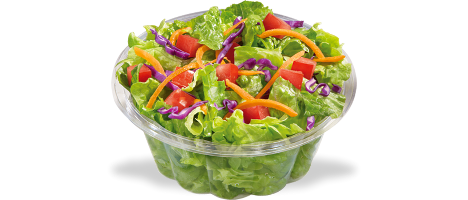

Če
omogočite JavaScript
, ta stran postane poučna prezentacija.
class: center, middle # Permutacije --- class: bottom # Permutacije? Kombinacije? ## Kaj bi lahko bila razlika? --- # Solata: - .green[zelena solata], .red[paradižnik], .orange[korenje] - .red[paradižnik], .orange[korenje], .green[zelena solata]  --- # Solata: - .green[zelena solata], .red[paradižnik], .orange[korenje] - .red[paradižnik], .orange[korenje], .green[zelena solata] <div style="color:white; padding:40px; margin:50px; border-style:solid; border-color:white; border-radius:30px;" > .center[.green[zelena solata], .red[paradižnik], .orange[korenje]] .center[=] .center[.red[paradižnik], .orange[korenje], .green[zelena solata]] </div> --- # Solata: - .green[zelena solata], .red[paradižnik], .orange[korenje] - .red[paradižnik], .orange[korenje], .green[zelena solata] <div style="color:white; padding:40px; margin:50px; border-style:solid; border-color:white; border-radius:30px;" > .center[.green[zelena solata], .red[paradižnik], .orange[korenje]] .center[=] .center[.red[paradižnik], .orange[korenje], .green[zelena solata]] </div> ## Vrstni red ni pomemben = KOMBINACIJE --- # Permutacije? ## Ključavnica za kolo --- # Permutacije? ## Ključavnica za kolo <p style="float:right; font-weight:bold; margin-top:100px;margin-right:15px;">1,2,3 ni enako kot 3,2,1</p> --- # Permutacije? ## Ključavnica za kolo <p style="float:right; font-weight:bold; margin-top:100px;margin-right:15px;">1,2,3 ni enako kot 3,2,1</p> <div style="border-style:solid; border-color:white;margin-top:200px;margin-left:450px; padding:10px;text-align:center;"> Z razliko od solate je vrstni red oziroma pozicija važna! </div> --- # Permutacije s ponavljanjem: <div id = "threejsDIV"> </div> --- # Permutacije brez ponavljanja? --- # Permutacije brez ponavljanja? * Ne želimo enakih okusov sladoleda --- # Permutacije brez ponavljanja? * Ne želimo enakih okusov sladoleda # Kombinacije brez ponavljanja? --- # Permutacije brez ponavljanja? * Ne želimo enakih okusov sladoleda # Kombinacije brez ponavljanja? * Prejšnji primer solate --- # Permutacije brez ponavljanja? * Ne želimo enakih okusov sladoleda # Kombinacije brez ponavljanja? * Prejšnji primer solate # Kombinacije s ponavljanjem? --- # Permutacije brez ponavljanja? * Ne želimo enakih okusov sladoleda # Kombinacije brez ponavljanja? * Prejšnji primer solate # Kombinacije s ponavljanjem? * Spomnimo se primera s solato: * .green[zelena solata], .green[zelena solata], .green[zelena solata] * .green[zelena solata], .green[zelena solata], .red[paradižnik] In tako dalje